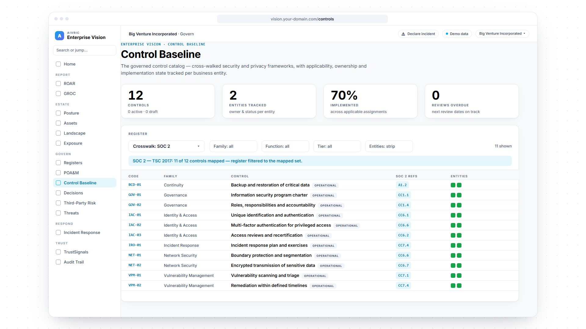

SOC 2 compliance · Trust Services Criteria · AiVRIC Enterprise VisionSOC 2, proven.
Get audit-ready and stay there. AiVRIC Enterprise Vision maps your controls to the SOC 2 criteria, turns every gap into an owned fix, records every decision and incident, and keeps the evidence your auditor asks for, on a record that can be verified.

Screens rebuilt from the Big Venture Incorporated demo workspace in Enterprise Vision. All figures are sample data.
What is SOC 2 compliance?
A report your customers trust, built on controls you can prove.
SOC 2 is an attestation report, issued by an independent CPA firm, on how well a service organization’s controls meet the AICPA’s Trust Services Criteria: security, availability, processing integrity, confidentiality and privacy. Customers ask for it before they trust you with their data.
Type IAre your controls designed correctly, at a single point in time?
Type IIDid those controls actually operate, every day, across an observation period?
The Trust Services Criteria
Five criteria. Pick one to see how it’s proven.
SOC 2TRUST SERVICES CRITERIA
Security
Required in every SOC 2 reportSOC 2 compliance software · seven words
Audit-ready in one workspace.
11 / 12controls cross-walked to SOC 2 (TSC 2017) in the Control Baseline
CC7.3–7.5incident response evidenced on an append-only timeline
16audit events re-verified by a hash chain, on demand
25 → 31assurance confidence after listing a gated SOC 2 report
Figures from the Big Venture Incorporated demo workspace (sample data), Sep 24, 2026.
SOC 2 compliance checklist
Where do you stand today?
Tick what’s already true. Your progress stays in this browser.
SOC 2 in AiVRIC Enterprise Vision
Your SOC 2 program, in your own workspace.
What you run
From scope to the report request.
- Cross-walk your control baseline to SOC 2 and the other frameworks you answer to
- Work the POA&M with owners and a 90-day clock
- Record exceptions, incidents and decisions on the record
- List your SOC 2 report in your trust center, gated, by request
Where it runs
Your deployment, your record.
- SaaS, self-hosted or air-gapped, with EU data residency available
- Single tenant: your data in your own workspace
- Named users only, with single sign-on and MFA at your identity provider
- Every control, decision and action on an append-only audit trail
Questions
What buyers ask first.
What is SOC 2 compliance?
SOC 2 is an attestation report from an independent CPA firm on how well your controls meet the AICPA Trust Services Criteria: security, availability, processing integrity, confidentiality and privacy. Security is required in every report; the others are included when they apply to the services you provide.
What’s the difference between SOC 2 Type I and Type II?
Type I tests whether your controls are designed correctly at a single point in time. Type II tests whether they actually operated over an observation period, which you agree with your auditor.
Does AiVRIC issue the SOC 2 report?
No. Only an independent CPA firm can issue a SOC 2 report. AiVRIC Enterprise Vision gets your program ready for the audit and keeps the evidence your auditor asks for on the record.
How does Enterprise Vision get us audit-ready?
Scope the systems and criteria in play, cross-walk your existing controls to SOC 2, and turn every gap into an owned remediation item with a deadline on the POA&M, so you walk into the audit knowing exactly where you stand.
What evidence do auditors ask for?
Policies, access reviews, change and incident records, vulnerability remediation, vendor reviews and proof that controls ran throughout the period. Enterprise Vision keeps these on the record, and its audit trail is hash-chained so it can be verified on demand.
Can our customers see our findings?
No. TrustSignals lists your SOC 2 report in your trust center as gated, available by request, and publishes bands and coverage — never raw findings. The document itself stays in your own SharePoint, Drive or URL.
Where does it run?
SaaS, self-hosted or air-gapped, with EU data residency available. Each workspace is single tenant, with named users signing in through single sign-on and MFA at your identity provider, and every action on an append-only audit trail.
Audit-ready. Every day.
See your SOC 2 program in AiVRIC Enterprise Vision. Bring your questions, and we’ll walk you through the criteria, the controls and the evidence on real screens.
Screens show sample data from a fictitious demo workspace. SOC 2 is an AICPA framework; SOC 2 reports are issued by independent CPA firms, not by AiVRIC.